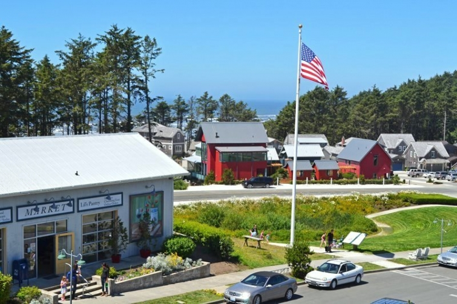
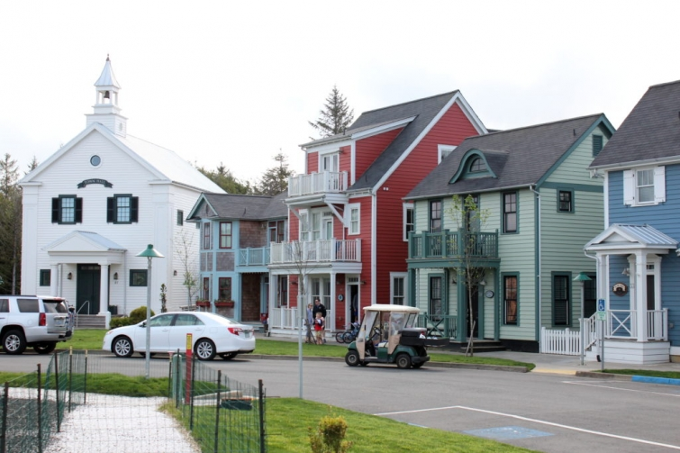

.png)
.PNG)
.PNG)
.PNG)
.PNG)
.PNG)
.JPG)
.JPG)
.PNG)
.PNG)


source
Happy 4th of July!  I can’t think of a better community to share with you on this day than the all-American dream town of Seabrook, Washington.  (Yes, Barbara you predicted it in your comment! 🙂 )
My blog friend, Emily from Jones Design Company spent spring break in Seabrook.  (And just an fyi, Emily is currently traveling in an RV with her husband and 4 children for over 3 months to see the sights in our beautiful country!) They live in Washington state, and when I read about their trip to Seabrook, I contacted her about the town.  She told me that I would absolutely love it there, and goodness was she ever right about that!
.jpg)
So my husband, our son, and I left Olympic National Park and started on the leg of our trip that would take us to the Columbia Rover Gorge and Portland, Oregon.  But, we had to first make a stop in Seabrook just for me. 🙂  (It wasn’t too far out of the way.)
If you have been reading here for awhile, you know I am a sucker for planned communities – from Seaside to Serenbe, from Palmetto Bluff to Habersham and everything in between.  The guys in my family are not nearly as smitten as I am, but they did like the “natural side” of Seabrook…so there was something for everyone there. 🙂
 Yes, I took a zillion photographs. Â So while you are looking at them, I want to tell you a little about the history of Seabrook.
Yes, I took a zillion photographs. Â So while you are looking at them, I want to tell you a little about the history of Seabrook.
Casey Roloff is the young man who had the vision to start the town.  When he and his wife, Laura, were in college they operated a painting business.  After they graduated (she with an art degree and he with a business degree), they moved to the Oregon coast and wanted to find a home that had character – not just your run of the mill house that you see popping up everywhere.  Since none was to be found, they built one.
Apparently, this home garnered attention from many others who wanted a home with the kind of details that they put into it and a home in a beach community. Â With this interest, the Roloffs knew there was a market there for a different kind of beach place. Â So they began to develop a new kind of community on the Oregon coast.
Bella Beach was their first development. Â This was in 2000, and they had only graduated from college in 1995, so getting financing for this project was quite difficult. Â After finally securing the loan they needed, Bella Beach sold out in only 6 months! Â Casey knew that people wanted homes in walkable communities where they could connect with neighbors. Â This was the start of his idea for Seabrook.
They wanted to build a town..not just a development. Â So they studied many coastal villages across the United States to see what made them work – what made them attractive to people who lived there. Â They especially studied the market of Cannon Beach there in Oregon to see why people were driving hours from the northern parts of Washington to go there, and they were very much inspired by Florida’s Seaside (which is very evident as you walk through both towns.)
Originally they were going to build Seabrook along the Oregon coast, but they could not find a suitable piece of property.
Then they remembered the coastal views they had enjoyed when hiking in Olympic National Park, and they found some undeveloped property south of it – property that looked much like the Oregon coast. Â They purchased 300 acres some time after 2001 (I think) with the profit they had made from their Bella Beach development, and Seabrook finally had a location on which to grow.
But Casey didn’t just jump right into developing this town himself. Â Before he began anything there, he pulled together a group of leading architects, developers, landscape architects, and others from around the country for a major group brainstorming and planning session.
After much talking and planning and drawing, and more talking and planning and drawing, they came up with a master plan that encompassed the best ideas from planned communities around the United States. Â Seabrook would be a pedestrian friendly community with the ability to find everything you need within a 5 minute walk in town.
The houses would be close together and close to the street and sidewalk to promote contact between neighbors. Â There would be narrow streets to naturally slow down traffic and make it safer for pedestrians. Â Alleyways would be built between houses so that vehicles could be parked there out of sight.
Streets would have taller buildings on the corners to “bookend” the shorter buildings between them.
The views down each street would be a little different from the next one, and outdoor spaces would also have variety as you walk through them across town.
There would be common garden areas…
And recreational facilities like a basketball court, an indoor swimming pool, and areas for volleyball and shuffleboard.
Seabrook would have diversity in its architectural styles.  The information I’ve studied says they drew on architecture of the Pacific Northwest, but to me, it looks like what you typically find in New England – especially in coastal Maine (which is why I was so drawn to it. 🙂 )
And so the town was launched in 2004. Architect and urban designer, Laurence Qamar was part of the team as was landscape designer, Stephen Poulakos (now the director of town development for Seabrook.)
It has quickly become the fastest growing coastal destination in the Pacific Northwest.  A Coastal Living Idea House was built there in 2010.  It was named the Community of the Year in 2011 – a national award.  Sunset magazine named it their first ever Idea Town in 2012, and the magazine built 2 idea houses there in 2013.  Not bad for such a young little town!
All of the homes I have shown you so far have been on one side of the road. Â Now I want us to cross State Road 109 over to the oceanfront areas.
I believe this home, Anchor Down, is the one that Emily and her family stayed in when they were there.
More lovely shingled architecture…
The oceanfront esplanade allows you to walk on a path along the bluff where the oceanside homes are built.
Just follow it a little further….
as it winds through the woods…
overlooking the water.
Then climb down the stairs…
and you are then at the wide beach along the ocean’s edge.
And I am going to leave you there today, but this is not all I have for you from Seabrook. Â No…far from it! Â I want to take you inside a couple of homes in the next post, and then we’ll look at the charming retail area there after that.
So I hope you have a safe and fun 4th of July, and I will see you back here soon. 🙂
Until next time…

p.s. Â I almost forgot! Â Sometime this month we will be traveling to see our daughter who is working in Oklahoma for the summer. Â If any of you have recommendations for things to see, places to eat, stores for good shopping, or hotels to stay in near Tulsa, I would greatly appreciate your recommendations. Â Thanks a bunch!


.PNG)
There is just so much out there that I need to see and do!!! Love it!!
Kelly,
You have shared yet another relaxing “e-trip” with us. I absolutely love it. How quaint and special. I appreciate all of the information you shared as you went along.
I don’t want the summer to fly by but this gets me excited about our vacation at Seabrook this Fall! We are staying in The Boat House. You may have seen it, right across from the pool. It has a fabulous porch with rocking chairs, my favorite place for morning coffee.
Gorgeous pictures!! Thank you for sharing them with me.
I am unsure of where your daughter is working, but I live in OKC, and I was born and raised just south of here. Utica Square is okay, but since my brother lives in Dallas, I like shopping with him. OKC tourism is growing by leaps and bounds with Bricktown going through another growth spurt. Downtown has drastically changed over the past 10 years…lots of great restaurants, outdoor music and eating venues, and the OKCMOA is wonderful. The National Cowboy and Western Heritage Museum in OKC is equally wonderful, and you almost cannot beat the Will Rogers Museum and Birthplace Ranch (which is still a working ranch) in Oologah and Claremore (by Tulsa). There are many new activities along with Oklahoma River in downtown OKC…kayaking, zip-lines, and whitewater kayaking just to name a few. Lake Tenkiller and Grand Lake of the Cherokees in northeast Oklahoma offer canoeing and water sports as well as lake and boat rentals. OKC also offers historic tours of the Overholser and Hefner Mansions as well as the Oklahoma History Center located by the State Capitol. If you want more information, drop me an email, and I will see what I can do.
Be still my heart! I love this community. I will have to visit someday. I was wondering if you might let us know, if you know, how much homes sell for when they are listed? What a worthwhile detour.
I can hardly wait for your next post.
xo,
Karen
I loved the tour of this beautiful coastal town and its’ history. It does remind me of Maine. I can’t wait to see the rest. Thank you for sharing all of your adventures with us. What a great way to enjoy retirement!
——————————————————————–
Thanks for reading all about it Cynthia! Yes, traveling has been a lot of fun for us now that both of us are retired. 🙂 (We thought we had better fit in all we can while we are young. LOL)
Kelly
Hi Kelly,
All I can say is WOW! What a lovely neighborhood. I’d choose the ocean side!!
Thanks and I can’t wait for the inside picture!!
——————————————————————–
It was most definitely a WOW place to visit Kaye Ann. With tons of money, I would choose the ocean side as well…but I could be happy with a one bedroom little cottage if it were in Seabrook. 🙂
Inside photos coming very soon!
Kelly
Kelly, Tulsa has the Philbrooke and Gilcrease Art Museums which are very nice to visit. There is a Matisse art exhibit at the museum of art in OKC which is getting worldwide notice. There are a number of wonderful restaurants in Tulsa including great mom and pop types. The area around the University of Tulsa is interesting as well as the Arkansas River walk. Utica Square and the surrounding neighborhood is fun to visit. I recall a good deli in the Utica Square that has been there for years. We bought our daughter’s first prom dress in Utica at Miss Jackson’s. Hope you enjoy yourselves. i live in south central OK, so I do not get to Tulsa often. OKC is more our place to visit. There are some wonderful Native American cultural centers to visit in many areas. Very beautiful, diverse in population and terrain is Oklahoma. Friendly people abound!
———————————————————————
Wow thanks a bunch for all the recommendations Becky! Yours is the second one for Utica Square, so we will most certainly be going there. I’ve read that they tore down Petty’s Fine Foods and Miss Jackson’s back in April – much to many shoppers dismay. But it looks like it still has many nice stores. We were thinking of trying out Stonehorse Cafe while we were there, and we have read good reviews for Burn BBQ. Have you eaten in either of those restaurants? We are looking forward to our trip to your state!
Kelly
After reading all these posts about your travels to Washington state I told my husband I do not want to take an Alaskan cruise but want to travel up the Washington and Oregon coast instead! I have enjoyed your travel posts so much Kelly.
——————————————————————–
I think either trip would be wonderful Lynne! Perhaps you should do BOTH! 🙂 My in-laws did an Alaska cruise many years ago, and they still talk about how beautiful it was.
Thanks for following along with our travels. 🙂
Kelly
If you get to Oklahoma City, don’t miss the memorial to the bombing at the Federal building. We were there at 3 in the morning one time and the serenity was overwhelming. There were at least 30 people (and police security) even though it was so early in the a.m. Family members who were there in the daytime said the tour includes videos from the cameras and is very moving. Also, depending on the time of year, Red Rock Canyon is lovely and amazing. You’re on flat prairie and then, all of a sudden, you start going down into a canyon with beautiful water and lovely red walls all around.
———————————————————————
Thank you so much for the recommendations. I don’t think we will make it over to Oklahoma City, but if we do, we will certainly visit the memorial. Our daughter was there yesterday for the 4th of July. I know my husband would love to see Red Rock Canyon.
Kelly
Such a beautiful and charming place. Love all of the shingled homes! I can’t wait to see inside!
——————————————————————–
It was! Those shingled houses get to me every time. We are replacing one of the exterior walls here and will be putting in shingles in place of the board and batten. At least we will have a touch of it. 🙂
Kelly
Oh my goodness, thanks Kelly for the amazing look into a lovely seaside community! Makes me want to move to the West Coast!
Warm Wags!
——————————————————————–
It made me want to move there too, Terry! (Plus it would be so much closer to our son who lives in Seattle. 🙂 )
Kelly
I am soooo enjoying this tour!
————————————————————————-
Well I am so glad you are Vicki. 🙂
Kelly
The houses are gorgeous…nice views too! I’m anxious to see the interiors. Thanks for taking us along! 😉
———————————————————————
Thank you for following along Donnamae! The whole town was just beautiful to me.
Kelly
Love the traditional charm of these houses, and I agree they look like they would easily fit on the east coast. I love the look of these kind of planned communities, but I like my privacy more. Of course in any prime coastal area the houses are going to be close together unless you have a gazillion dollars. While I understand the appeal of these walkable communities where you can speak to your neighbors on their front porches, I need more space around me, and don’t want to hear my neighbors’ porch conversations (not to mention their loud TV’s or overly rambunctious kids)! Still, I love the architecture. Looking forward to seeing the interiors.
Oh, Kelly, this has been such a delightful tour! I can hardly wait to see the inside of some of the houses. You are such a great tour guide. I think I have said that before. thank you for sharing this with us. Such beautiful scenery! I can tell you had a fantastic time during this area. We’ll just keep tagging along wherever you lead we will be glad to follow. Thanks Kelly.
———————————————————————
Goodness! Thank you for the sweet compliments Sherry! Seabrook was my favorite part of the trip (for obvious reasons.) The shops were even pretty!
Kelly
Hi Kelly! Thanks for cheering my rainy 4th with that beautiful trip to Washington. What a perfect place! You’re the best. Blessings, Julia
——————————————————————-
So glad I could brighten your dreary day Julia. 🙂 It was a perfect place!
Kelly
Kelly, what a lovely, lovely town. Enjoying the tour.
———————————————————————-
Thank you for reading Tricia, and I am so happy you are enjoying the tour. 🙂
Kelly
Happy 4th of July neighbour! Really really enjoyed the sightseeing tour. The homes are so charming and I love the small town feeling. Look forward to seeing inside some homes.
——————————————————————-
Thank you Anita! The homes and town were all so charming. Wish we could move there!
Kelly
You should definitely visit Utica Square in Tulsa for shopping – all your favorite stores in a beautiful, walkable center, in a lovely part of town.
———————————————————————
We will add it to our places to visit then. Thank you so very much for your recommendation Kenda!
Looking forward to our visit. 🙂
Kelly
Delighted to have ‘found’ your blog a few weeks ago & am a big fan. I’m older than you & live in Buckhead/Atlanta. Your current trip sounds wonderful and I would like to try to basically do the same itinerary in a year or so, as 70th birthday adventure with husband, currently recovering from knee replacement (2nd). Do you think I can ‘piece together’ same basic itinerary by careful re-reading of blog?… or I’d be happy to pay for basic travel advice. Technically (long story) retired Delta employee. Did you & family fly to West Coast & then rent car?…or did you drive all the way out West? I gather you mainly reside in South Georgia. In the distant past my Husband & I both have relatives from places such as Valdosta, Americus, Pine Mountain & similar. Best wishes for continued happy, interesting, safe travels. LM
———————————————————————
Hi Lane! You live in a wonderful area for shopping and dining! I hope your husband is having a great recovery from his knee surgery (and a quick one!)
You can most certainly do the exact trip by following the blog posts. They are in the order of our travels. We flew Delta to Seattle. Our son who lives there picked us up from the airport, and we did the things in the very first post that day. (We used his car for all of our transportation.) We did another day in Seattle on the last day of our trip, and I will post about it after I finish the ones for Seabrook and the Columbia River Gorge. So you might want to do 2 days in Seattle to do all of it back to back instead of a day at the beginning and a day at the end as we did. Otherwise, the itinerary is as it is written on the blog.
Best wishes for your travels!
Kelly
I may or may not have drooled all over my laptop. Gotta go pack the house. I’m moving.
——————————————————————–
LOL! Karen your comment cracked me up! And yes, I wish we could pack up the house and move to Seabrook with you. 🙂
Kelly
Just lovely, Kelly! It feels like we have stepped back in time!! I think many folks of all ages are looking for the charm of the past– front porches, neighbors and friendly places to live. To be able to bike, walk and shop locally lowned places. And this has a big plus — Oceanside. Thank you for a comforting post for our holiday. Been digging into my family geneology and truly enjoying my
discoveries. So many relatives that I never got the pleasure of meeting. Now contacting their children and cousins which has opened a whole new world for this “only child”! Nothing like family to make one feel complete! Happy 4th to you and yours!
———————————————————————-
Yes, Seabrook was a step back in time to an old style walkable community Louvina. And I agree with you that many people are looking for just that kind of place.
How smart of you to be digging into your family’s history! What an interesting thing to do. 🙂 I hope you had a fun 4th of July with a lot of good food!
Kelly